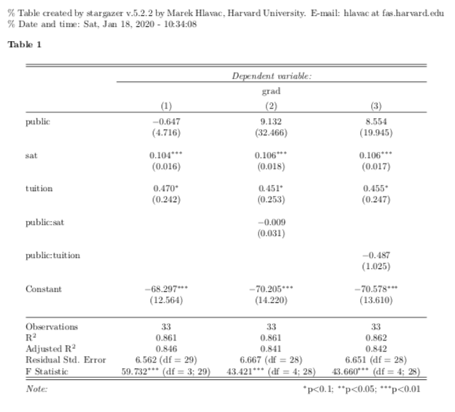
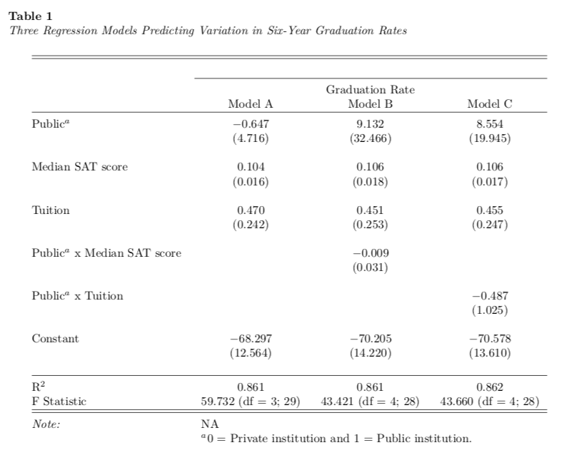
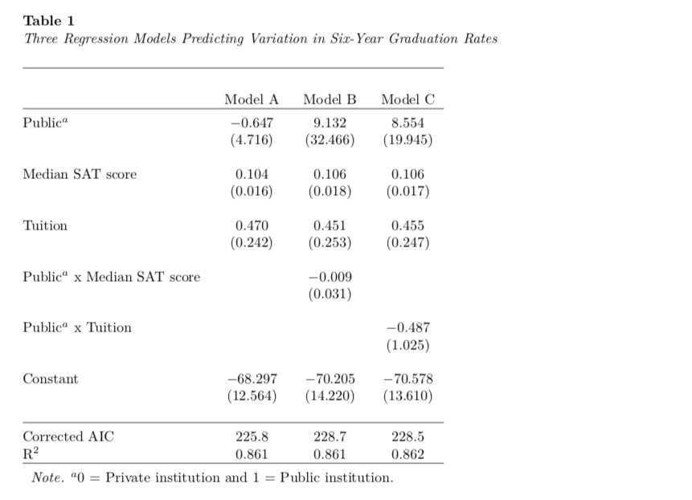

---
title: "Untitled"
author: "Andrew Zieffler"
date: "1/12/2020"
output: pdf_document
header-includes:
- \usepackage{caption}
- \captionsetup[table]{textfont={it}, labelfont={bf}, singlelinecheck=false, labelsep=newline}
---./assets/body-header.qmd
This is the fifth part of a short blog series I am writing to re-create some of the sample tables found in the 7th edition APA Publication Manual. In this post I will attempt to show how to create a table to present the results of several fitted models. (This type of table is not among the example tables in the 7th edition APA Publication Manual.) To do so, I will incorporate many ideas that I covered in the first, second, third and fourth of these posts.
My Process
I will again render to PDF and set up the YAML to import the caption package (LaTeX) and set up the APA caption formatting.
In the RMarkdown body, I will load a few packages and also import a data set that I will use to fit the models.
# Load libraries
library(broom)
library(knitr)
library(kableExtra)
library(tidyverse)
# Import data
mn = read_csv("https://raw.githubusercontent.com/zief0002/rustic-penguin/main/data/mn-schools.csv") |>
mutate(public = if_else(sector == "Public", 1, 0))
# View data
head(mn)# A tibble: 6 × 6
name grad sector sat tuition public
<chr> <dbl> <chr> <dbl> <dbl> <dbl>
1 Augsburg College 65.2 Private 1030 39.3 0
2 Bethany Lutheran College 52.6 Private 1065 30.5 0
3 Bethel University, Saint Paul, MN 73.3 Private 1145 39.4 0
4 Carleton College 92.6 Private 1400 54.3 0
5 College of Saint Benedict 81.1 Private 1185 43.2 0
6 Concordia College at Moorhead 69.4 Private 1145 36.6 0The data in were collected from http://www.collegeresults.org and contain 2011 institutional data for n=33 Minnesota colleges and universities. The codebook is available here.
We need to compute the regression results from fitting an OLS model. Here I will predict variation in graduation rates using several potential competing models.
# Fit models
lm.1 = lm(grad ~ 1 + public + sat + tuition, data = mn)
lm.2 = lm(grad ~ 1 + public + sat + tuition + public:sat, data = mn)
lm.3 = lm(grad ~ 1 + public + sat + tuition + public:tuition, data = mn)There are several packages that can be used to present the results of one or more fitted models. These include stargazer, texreg, and modelsummary among others. In this post I will focus on using the stargazer package, which I have found works well for fixed-effects models.
After loading the stagazer package, the stargazer() function can be used to create a basic table of regression results. The type= argument defaults to latex, so if you are rendering to an HTML document, you need to change this to type="html".
# Load library
library(stargazer)
# Output model results in a table
stargazer(lm.1, lm.2, lm.3, type = "latex")
% Table created by stargazer v.5.2.3 by Marek Hlavac, Social Policy Institute. E-mail: marek.hlavac at gmail.com
% Date and time: Tue, Oct 31, 2023 - 18:00:09
\begin{table}[!htbp] \centering
\caption{}
\label{}
\begin{tabular}{@{\extracolsep{5pt}}lccc}
\\[-1.8ex]\hline
\hline \\[-1.8ex]
& \multicolumn{3}{c}{\textit{Dependent variable:}} \\
\cline{2-4}
\\[-1.8ex] & \multicolumn{3}{c}{grad} \\
\\[-1.8ex] & (1) & (2) & (3)\\
\hline \\[-1.8ex]
public & $-$0.647 & 9.132 & 8.554 \\
& (4.716) & (32.466) & (19.945) \\
& & & \\
sat & 0.104$^{***}$ & 0.106$^{***}$ & 0.106$^{***}$ \\
& (0.016) & (0.018) & (0.017) \\
& & & \\
tuition & 0.470$^{*}$ & 0.451$^{*}$ & 0.455$^{*}$ \\
& (0.242) & (0.253) & (0.247) \\
& & & \\
public:sat & & $-$0.009 & \\
& & (0.031) & \\
& & & \\
public:tuition & & & $-$0.487 \\
& & & (1.025) \\
& & & \\
Constant & $-$68.297$^{***}$ & $-$70.205$^{***}$ & $-$70.578$^{***}$ \\
& (12.564) & (14.220) & (13.610) \\
& & & \\
\hline \\[-1.8ex]
Observations & 33 & 33 & 33 \\
R$^{2}$ & 0.861 & 0.861 & 0.862 \\
Adjusted R$^{2}$ & 0.846 & 0.841 & 0.842 \\
Residual Std. Error & 6.562 (df = 29) & 6.667 (df = 28) & 6.651 (df = 28) \\
F Statistic & 59.732$^{***}$ (df = 3; 29) & 43.421$^{***}$ (df = 4; 28) & 43.660$^{***}$ (df = 4; 28) \\
\hline
\hline \\[-1.8ex]
\textit{Note:} & \multicolumn{3}{r}{$^{*}$p$<$0.1; $^{**}$p$<$0.05; $^{***}$p$<$0.01} \\
\end{tabular}
\end{table} The function outputs raw LaTeX (or HTML), so to get it to form into a table you need to include results='asis' in your Rmarkdown chunk.
```{r message=FALSE, results='asis'}
# Load library
library(stargazer)
# Output model results in a table
stargazer(lm.1, lm.2, lm.3, type = "latex")
```
Customizing the Stargazer Output
There are several arguments in the stargazer() function to customize the table.
stargazer(
lm.1, lm.2, lm.3,
type = "latex",
table.placement = "H",
title = "Three Regression Models Predicting Variation in Six-Year Graduation Rates",
column.labels = c("Model A", "Model B", "Model C"),
colnames = FALSE,
model.numbers = FALSE,
dep.var.caption = " ",
dep.var.labels = "Graduation Rate",
covariate.labels = c("Public$^a$", "Median SAT score", "Tuition", "Public$^a$ x Median SAT score", "Public$^a$ x Tuition"),
star.cutoffs = NA,
keep.stat = c("rsq", "f"),
notes = "$^a$0 = Private institution and 1 = Public institution.",
notes.align = "l"
)
This is close, but there are a few things I am not happy with. Namely,
- The table should be aligned with the caption rather than centered.
- The double lines produced at the top and bottom of the table.
- The label for the dependent variable, “Graduation Rate”, is redundant with the caption so could be omitted, as could the border produced above it.
- The note is separated from the Note: text and uses a colon rather than a period in this text. It also has the text “NA” since we set the
star.cutoff=argument (which omits the dreaded significance stars) toNA.
To fix these things we need to edit the LaTeX syntax that is produced by the stargazer() function. To do this, run the syntax in the console and then copy-and-paste the raw LaTeX into your RMarkdown document (outside of a code chunk). The LaTeX syntax from our table is:
\begin{table}[H] \centering
\caption{Three Regression Models Predicting Variation in Six-Year Graduation Rates}
\label{}
\begin{tabular}{@{\extracolsep{5pt}}lccc}
\\[-1.8ex]\hline
\hline \\[-1.8ex]
& \multicolumn{3}{c}{ } \\
\cline{2-4}
\\[-1.8ex] & \multicolumn{3}{c}{Graduation Rate} \\
& Model A & Model B & Model C \\
\hline \\[-1.8ex]
Public$^a$ & $-$0.647 & 9.132 & 8.554 \\
& (4.716) & (32.466) & (19.945) \\
& & & \\
Median SAT score & 0.104 & 0.106 & 0.106 \\
& (0.016) & (0.018) & (0.017) \\
& & & \\
Tuition & 0.470 & 0.451 & 0.455 \\
& (0.242) & (0.253) & (0.247) \\
& & & \\
Public$^a$ x Median SAT score & & $-$0.009 & \\
& & (0.031) & \\
& & & \\
Public$^a$ x Tuition & & & $-$0.487 \\
& & & (1.025) \\
& & & \\
Constant & $-$68.297 & $-$70.205 & $-$70.578 \\
& (12.564) & (14.220) & (13.610) \\
& & & \\
\hline \\[-1.8ex]
R$^{2}$ & 0.861 & 0.861 & 0.862 \\
F Statistic & 59.732 (df = 3; 29) & 43.421 (df = 4; 28) & 43.660 (df = 4; 28) \\
\hline
\hline \\[-1.8ex]
\textit{Note:} & \multicolumn{3}{l}{NA} \\
& \multicolumn{3}{l}{$^a$0 = Private institution and 1 = Public institution.} \\
\end{tabular}
\end{table}The \centering synatax in the first line is what is causing the table itself to be centered. Delete this. The double lines at the top and bottom of the table are produced by the two consecutive hline commands. Remove one at the beginning and end of the table. In a similar way the syntax that corresponds to the “Graduation Rate” label and the \cline{2-4} preceeding it can be omitted.
Changing the table note is a little more complicated. The primary syntax for this is the following:
\textit{Note:} & \multicolumn{3}{l}{NA} \\
& \multicolumn{3}{l}{$^a$0 = Private institution and 1 = Public institution.} \\ In the syntax that creates the LaTeX table, the ampersand (&) indicates a new column and the double slash (\\) indicates the end of the row. So the italicized text Note: is put in the first cell of the row and then the text “NA” is placed in the next cell of the same row. The multicolumn{3}{l}{} actually combines the last 3 columns into a single cell and aligns the text (which is placed in the third set of curly braces) to the left. To make this all line up better, we are going to replace the note syntax with the following:
\multicolumn{4}{l}{\textit{Note.} $^a$0 = Private institution and 1 = Public institution.} \\ This will combine all four columns of the table into a single cell and will align the text to the left of this cell. The resulting table will fix our issues. This is the syntax that is remaining:
\begin{table}[H]
\caption{Three Regression Models Predicting Variation in Six-Year Graduation Rates}
\label{}
\begin{tabular}{@{\extracolsep{5pt}}lccc}
\\[-1.8ex]
\hline \\[-1.8ex]
& \multicolumn{3}{c}{ } \\
& Model A & Model B & Model C \\
\hline \\[-1.8ex]
Public$^a$ & $-$0.647 & 9.132 & 8.554 \\
& (4.716) & (32.466) & (19.945) \\
& & & \\
Median SAT score & 0.104 & 0.106 & 0.106 \\
& (0.016) & (0.018) & (0.017) \\
& & & \\
Tuition & 0.470 & 0.451 & 0.455 \\
& (0.242) & (0.253) & (0.247) \\
& & & \\
Public$^a$ x Median SAT score & & $-$0.009 & \\
& & (0.031) & \\
& & & \\
Public$^a$ x Tuition & & & $-$0.487 \\
& & & (1.025) \\
& & & \\
Constant & $-$68.297 & $-$70.205 & $-$70.578 \\
& (12.564) & (14.220) & (13.610) \\
& & & \\
\hline \\[-1.8ex]
R$^{2}$ & 0.861 & 0.861 & 0.862 \\
F Statistic & 59.732 (df = 3; 29) & 43.421 (df = 4; 28) & 43.660 (df = 4; 28) \\
\hline \\[-1.8ex]
\multicolumn{4}{l}{\textit{Note.} $^a$0 = Private institution and 1 = Public institution.} \\
\end{tabular}
\end{table}The resulting table looks like the following.

Adding Additional Model-Level Statistics into the Table
You may also wish to add other model-level summaries into the table. For example, below I will compute and add the corrected AIC into the table. To do this, use the add.lines= argument in the stargazer() function. This argument takes a list that gives the contents of each cell in the added row. In our example this would be a list including the text to produce in the first cell and then a corrected AIC value for each respective model in the remaining three cells. I also omit the \(F\)-statistic in the keep.stat= argument.
# Load library
library(AICcmodavg)
# Create table
stargazer(
lm.1, lm.2, lm.3,
type = "latex",
table.placement = "H",
title = "Three Regression Models Predicting Variation in Six-Year Graduation Rates",
column.labels = c("Model A", "Model B", "Model C"),
colnames = FALSE,
model.numbers = FALSE,
dep.var.caption = " ",
dep.var.labels = "Graduation Rate",
covariate.labels = c("Public$^a$", "Median SAT score", "Tuition", "Public$^a$ x Median SAT score", "Public$^a$ x Tuition"),
star.cutoffs = NA,
keep.stat = c("rsq"),
notes = "$^a$0 = Private institution and 1 = Public institution.",
notes.align = "l",
add.lines = list(c("Corrected AIC", round(AICc(lm.1), 1), round(AICc(lm.2), 1), round(AICc(lm.3), 1)))
)After editing the LaTeX syntax to make the same changes as before, we get the following table:
